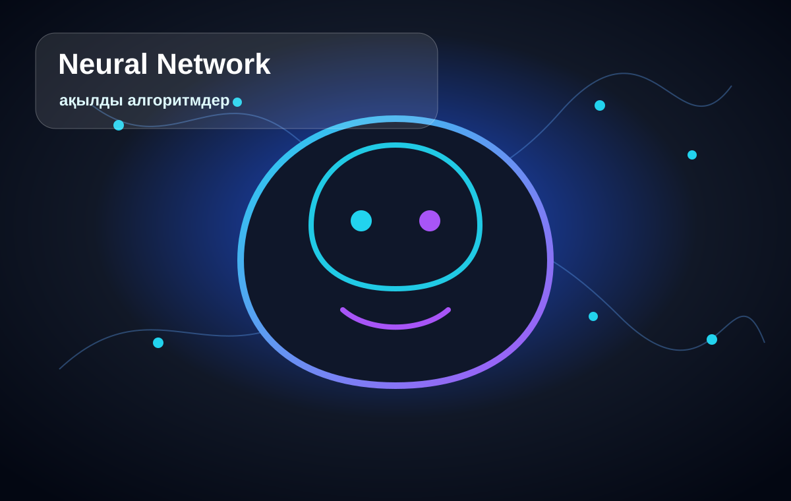

01
Жылдамдық
Ақпаратты тез өңдеп, мәтін, жоспар, идея немесе қысқаша қорытынды дайындай алады.
Бұл сайт жасанды интеллекттің не екенін, қай салада қолданылатынын және оны қауіпсіз пайдалану жолдарын түсіндіреді. Дизайн технологиялық стильде жасалды және оқу тапсырмасының барлық талаптарын орындайды.

AI компьютерге мәтінмен жұмыс істеу, сурет тану, дерек талдау, сұрақтарға жауап беру және автоматтандыру сияқты тапсырмаларды орындауға мүмкіндік береді.
Жасанды интеллект дайын ережелермен ғана емес, деректер арқылы үйреніп, нәтиже ұсынатын технология. Ол адамды толық алмастырмайды, бірақ көптеген жұмысты жылдам әрі ыңғайлы жасауға көмектеседі.
AI дұрыс қолданылса, уақыт үнемдейді, идея табуға көмектеседі және күрделі ақпаратты жеңіл түсіндіреді.
Ақпаратты тез өңдеп, мәтін, жоспар, идея немесе қысқаша қорытынды дайындай алады.
Күрделі тақырыптарды қарапайым тілмен түсіндіріп, мысалдар арқылы үйренуге көмектеседі.
Қайталанатын тапсырмаларды азайтып, адамның шығармашылық жұмысқа көбірек көңіл бөлуіне мүмкіндік береді.
Жоба кемінде үш беттен тұрады, барлық бетте мәзір және ішкі навигация бар.
AI туралы жалпы түсінік, артықшылықтар және сайт құрылымы.
Қолдану салалары, галерея, аудио және бейнефайл.
Кері байланыс формасы және қауіпсіздік ережелері.